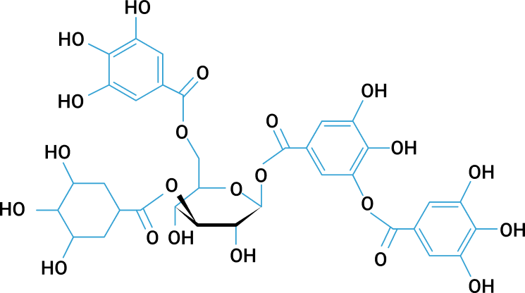

탈취제
탄닌과 카테킨 성분을 응용한 제품을 생산합니다.
타닌(tannin)은 아주 떫은 맛을 내는 폴리페놀의 일종으로써
식물에 의해 합성되며 단백질과 결합하여 침전시킨다.
원래 동물의 껍질을 가죽으로 만들때 방부제로 쓰이는
물질을 지칭하는 말이었으나 충분한 하이드록실기 등을
가지고서 단백질이나 다른 고분자와 강하게 결합하는
커다란 폴리페놀계 화합물을 총칭한다.
타닌의 분자량은 500부터 20,000이 넘는 것도 있다.
식물체 내에서 미생물, 곤충, 포유동물 등에 대한
방어기능을 갖는다. 또한, 타닌이 많이 있는 음식이나
타닌을 많이 섭취하면 설사를 할 수 있으니 조심해야 한다.
대표적인 음식(음료)가 녹차이다.
습기제거제
습기제거제는 염화칼슘을 원료로 만들어진 제품이다.
염화칼슘의 조해성이라는 성질을 이용
해 주변의 물을 흡습한다.
방향제
알러지 유발물질을 최소화하고, 발암물질을 사용하지 않아서 안전한 제품을 만듭니다. 